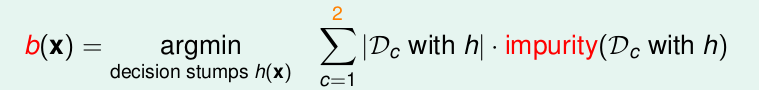
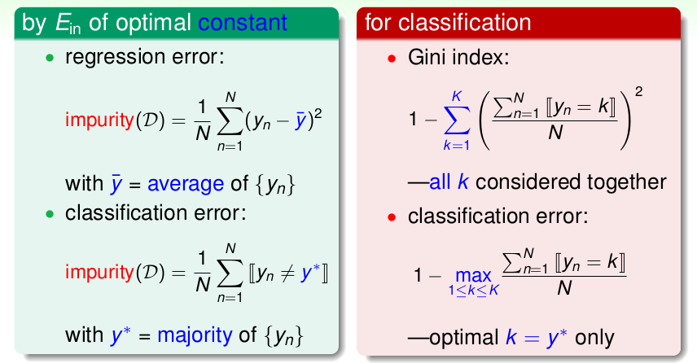

《机器学习技法》系列课程（九）
Decision Tree Hypothesis
我们学习了将多个假设g融合到一起使用的方法：Blending、Bagging以及AdaBoost，使用这些Aggregate的方法，我们可以提高模型的性能（即使每一个g都只能比瞎猜要好一点）。如果我们现在手上已经有了一些假设g，那么我们可以通过uniform、non-uniform、conditional等方式将它们融合在一起（Blending）；如果我们现在手上没有这些g，那么我们需要从数据中学习到一些g，然后将其组合到一起：我们可以使用Bagging的方法来做uniform的组合，使用AdaBoost的方法来做non-uniform的组合。现在我们将学习一种新的方案：决策树（Decision Tree），使用它我们可以学习到一些g，并将其有条件的（conditional）组合到一起！
我们在数据结构课程中学习了树形结构，对于决策树来说，他的每一个非叶子节点就是一个条件，或者说是基本的假设（g），它们通常是很简单的，而连接这个节点的每一条边都表示条件相应的取值（或者取值范围），而每一个叶子节点则表示最终的结果。
我们可以从两个角度来看决策树这种学习算法：
- 我们可以将整个决策树这个假设G(x)看做是多个从根节点到叶子的路径的组合（多个假设g的组合）。
- 可也以递归地看待决策树，每一个决策树都是由根节点（一个基本假设）和多个子决策树构成的。
对于决策树，其最重要的优点就是他的可解释性，只要构建了一个决策树，我们就能清晰地看到它的决策过程。同时，它也是简单高效的。然而对于决策树来说，它缺少必要的理论支撑，我们很难说明怎样让它做得好或者说为什么它能做得好（或者说对于决策树有很多的解释方案）。同时存在多种决策树的构建方案，但是并不存在一种代表性的算法。
Decision Tree Algorithm
我们可以将决策树表示为如下形式：
这是一种递归的表示方案，其中C表示根节点的假设取值一共有C个，从而有C个子决策树。
我们如果要构建这样的一棵决策树，则需要有四个要点：
- 决策树有几个分支（每个假设有几个取值）。
- 怎样将数据D拆分（当假设取值为某一个值，则对应某一部分数据：Dc = {(x, y)| b(x) = c}）。
- 每一个条件的选择。
- 决策树构建的终止条件。
下面我们学习一种构建决策树的方法：Classification and Regression Tree (C&RT)。该算法分支数目C=2，也就是说使用该算法构建的决策树是一棵二叉树；其次，它最后的叶子是一个常数（哪一类）。也因此，如果使用该算法构建的决策树要解决的问题是一个回归问题，其可以使用平方误差；如果解决的是一个分类问题，则可以使用01Error。
我们提到决策树构建需要解决4个问题，上面我们已经说明C&RT的分支数（C）是2；而在每一个节点对数据进行拆分的方法是decision stump，也就是根据某一个简单的条件，将数据分为两部分。而决定使用哪一个条件来拆分数据的方法是引入一个纯净度（purifying）来衡量条件的好坏，与之相对的则是不纯净度（impurify），我们一般通过最小化不纯净度来决定条件的选择：

上面的表达式是不纯净度的表达式，其表示在假设h的条件下两个分支不纯净度的加和，如果b(x)越小，说明在该结点这个假设h越好。

如上图所示，我们提到C&RT的每一个叶子都是常数，那么如果解决回归问题，可以使用平方误差，如果是分类问题，可以使用01误差（看大多数相同的数据和其他数据的差）。然而，我们进一步讨论分类问题，会发现这种衡量方法只会考虑数量最多的数据，而其他数据不会被考虑到，因此可以使用Gini指数来作为分类问题的求解方法(它也更适合用于分类问题)：它考虑了所有数据。
最后我们考虑决策树的终止条件，其包含两个条件：
- 如果最终的数据仅仅包含相同的数据，此时无法继续切分，所以可以终止算法。
- 如果数据对应的yn是相同的，此时说明不纯度为0，可以终止算法。
Decision Tree Heuristics in C&RT
C&RT方法很容易处理二分类、回归以及多分类问题。然而，对于一个完全成长的决策树，很可能Ein=0，但是Eout是非常大的。因为随着决策树构建的进行，构建每个节点的数据越来越少，这就导致了overfitting。
由此，我们需要regularization的方法来降低复杂度。对于决策树，其模型的复杂度体现在叶子节点的数量，所以，我们可以不切那么多的树叶，一个好的决策树，不但它的ein很低，树叶的数量也要少。所以，当我们得到一棵完全成长的决策树以后，可以去掉一些叶子，选择ein稍稍大一点但是复杂度小一点的，这个方法就是剪枝。
如果考虑所有可能的切法,这看起来不容易做到。实际操作中，我们可以在得到完全长成的树以后，把每一个叶子摘掉，看哪个Ein最小，然后试着摘第二个叶子，第三个叶子…
此外，我们也会遇到非数值性的特征，使用决策树我们同样可以处理这样的问题，此时对于不同的类别可以采用“左”、“右”来切分而不是0、1。
我们还可能会遇到特征缺失的场景，我们的一种解决方案是surrogate branch，就是选择近似的特征来替代这些缺失的特征。那么怎样选择近似的特征呢？如果两种特征切分结果是类似的，说明它们相似。可以将其存储，在预测时遇到缺失数据以后，使用它替代缺失的特征。
文章内容和图片均来自“国立台湾大学林轩田老师”的《机器学习技法》课程！
— END —